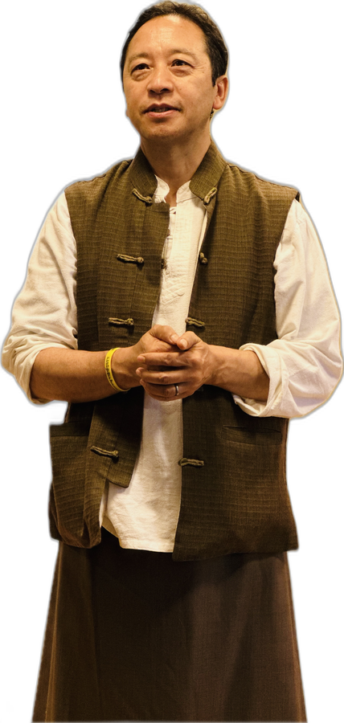

현대인을 위한 약사여래 체험 수행 초대장
AI 기술 혁명의 시대에도 인간의 마음은 여전히 외로움과 불안 속에서 길을 찾고 있습니다.
과거는 배움으로 남기고, 현재는 수행으로 살아가며, 미래는 서원으로 맞이합니다.
혜봉 선생님과의 소중한 인연으로 이어진 쉐랍 텐진 선생님의 방한 — 티베트 수행 전통과 약사여래 부처님의 가르침으로 몸과 마음을 정화하고, 자신과 공동체, 인류를 향한 자비심을 키워 가는 여정입니다.
다음 세대로 이어지는 지혜로운 공동체를 서원하며, 약사여래의 깨달음의 길에 여러분을 소중히 초대합니다.
혜봉 선생님
혜봉 선생님은 동국대학교 불교학과를 졸업하고, 1985년 법륜스님과 '정토회'를 설립, 대중 수행 지도에 첫발을 내디뎠습니다. 1990년대부터 동사섭·간화선·위빠사나를 거쳐, 2004년부터는 인도 다람살라에서 티베트 로종 명상을 공부하셨고, 이 인연으로 해외 선지식들을 국내에 초청하여 금강승 수행과 티베트 명상을 전하는 데 기여하셨습니다.
이후 명상아카데미와 (사)밝은세상 설립(2000년)을 비롯해 명상수행학교 행복수업과 한산명상수행학교를 운영하시고, 외국에서도 현대인을 위한 명상 프로그램을 교육하셨습니다. 2023년 입적 전까지는 행복수업협동조합을 설립해 초기·대승·금강승·선불교를 통합한 코칭 수행 체계를 완성하셨으며, 담마·멘토·선재 스쿨 프로그램을 통해 평화의 리더를 양성하셨습니다.
쉐랍 텐진
| 시간 | 8. 26 ~ 27 (수 · 목)이틀 동일 |
|---|---|
| 09:00~10:30 | 수행 |
| 10:30~10:45 | 쉼 |
| 10:45~12:15 | 수행 |
| 12:15~13:45 | 점심식사 & 이완 |
| 13:45~15:15 | 수행 |
| 15:15~15:30 | 쉼 |
| 15:30~17:00 | 수행 |
| 17:00~17:15 | 쉼 |
| 17:15~18:00 | 수행 |
- 09:00~10:30수행
- 10:30~10:45쉼
- 10:45~12:15수행
- 12:15~13:45점심식사 & 이완
- 13:45~15:15수행
- 15:15~15:30쉼
- 15:30~17:00수행
- 17:00~17:15쉼
- 17:15~18:00수행
| 시간 | 8. 29 ~ 30 (토 · 일)이틀 동일 |
|---|---|
| 09:00~10:30 | 수행 |
| 10:30~10:45 | 쉼 |
| 10:45~12:15 | 수행 |
| 12:15~13:45 | 점심식사 & 이완 |
| 13:45~15:15 | 수행 |
| 15:15~15:30 | 쉼 |
| 15:30~17:00 | 수행 |
| 17:00~17:15 | 쉼 |
| 17:15~18:00 | 수행 |
- 09:00~10:30수행
- 10:30~10:45쉼
- 10:45~12:15수행
- 12:15~13:45점심식사 & 이완
- 13:45~15:15수행
- 15:15~15:30쉼
- 15:30~17:00수행
- 17:00~17:15쉼
- 17:15~18:00수행
| 시간 | 9. 4 ~ 7 (금 ~ 월)수행일 | 9. 8 (화)마지막날 |
|---|---|---|
| 09:00~10:30 | 수행 | 수행 |
| 10:30~10:45 | 쉼 | 쉼 |
| 10:45~12:15 | 수행 | 수행 |
| 12:15~13:45 | 점심식사 & 이완 | 점심식사 & 이완 |
| 13:45~15:15 | 수행 | 수행 |
| 15:15~15:30 | 쉼 | 쉼 |
| 15:30~17:00 | 수행 | 수행 |
| 17:00~17:15 | 쉼 | 쉼(종료) |
| 17:15~18:00 | 수행 |
- 09:00~10:30수행
- 10:30~10:45쉼
- 10:45~12:15수행
- 12:15~13:45점심식사 & 이완
- 13:45~15:15수행
- 15:15~15:30쉼
- 15:30~17:00수행
- 17:00~17:15쉼
- 17:15~18:00수행
- 09:00~10:30수행
- 10:30~10:45쉼
- 10:45~12:15수행
- 12:15~13:45점심식사 & 이완
- 13:45~15:15수행
- 15:15~15:30쉼
- 15:30~17:00수행
- 17:00~쉼(종료)
| 시간 | 9. 10 (목)첫날 · 입재 | 9. 11 ~ 12 (금 · 토)수행일 | 9. 13 (일)마지막날 · 회향 |
|---|---|---|---|
| 06:00~07:00 | 아침명상 | 아침명상 | |
| 07:00~09:30 | 아침식사 및 휴식 | 아침식사 및 휴식 | |
| 09:30~12:00 | 오전법문 | 뿌자와 회향식 | |
| 12:00~14:00 | 점심식사 | 점심식사 | |
| 14:00~16:00 | 접수 | 오후 수련 | 집으로 (14:00~) |
| 16:00~18:00 | 안내와 인사 | ||
| 18:00~19:30 | 저녁식사 | 저녁식사 | |
| 19:30~21:30 | 저녁수련 | 저녁수련 | |
| 21:30~ | 취침 | 취침 |
- 14:00~16:00접수
- 16:00~18:00안내와 인사
- 18:00~19:30저녁식사
- 19:30~21:30저녁수련
- 21:30~취침
- 06:00~07:00아침명상
- 07:00~09:30아침식사 및 휴식
- 09:30~12:00오전법문
- 12:00~14:00점심식사
- 14:00~18:00오후 수련
- 18:00~19:30저녁식사
- 19:30~21:30저녁수련
- 21:30~취침
- 06:00~07:00아침명상
- 07:00~09:30아침식사 및 휴식
- 09:30~12:00뿌자와 회향식
- 12:00~14:00점심식사
- 14:00~집으로

프라나
Prana는 모든 물질 진화의 근원, 물체의 원시 에너지
다섯 룽
정수리·목·심장·배꼽·비밀 차크라, 정서적 막힘 해소
아홉 정화 호흡
세 개의 주요 채널, 아홉 번의 호흡
욱죵
차(채널)와 룽(바람)을 다루는 정화 수행
꿈요가
Dream Yoga는 삶과 꿈과 죽음을 하나의 여정으로 통합
룽즁쥭 쌍악쑤 닥빠
룽(바람), 즁(날숨), 쥭(들숨) 신성한 만트라로 몸과 호흡 여행
나로파 육법
여섯 가지 완성차제 수행
약사여래 수행
12서원의 치유 부처님, 무드라와 법구 사용법
1수행 선택 (여러 개 선택 가능)
2신청서 작성
신청자 기본 정보
모든 수행 공통입니다. 한 번만 적으시면 됩니다.
3참가비 안내
| 선택한 수행 | 참가비 |
|---|---|
| 위에서 수행을 선택하면 참가비가 표시됩니다. | |
입금 시 "신청자명+룽즁쥭 / 신청자명+꿈요가 / 신청자명+5일"과 같이 입금해 주시면 확인이 빠릅니다.
4동의 및 기타
수집 목적 : 수행 신청 접수 및 참가자 관리, 안내 문자·연락, 참가비 입금 확인
보유 기간 : 수행 종료 후 1년까지 보관 후 지체 없이 파기
동의를 거부하실 수 있으나, 거부 시 신청 접수가 불가능합니다.
수집 목적 : 수행 중 안전 확보 및 응급 상황 대응, 개인별 배려 사항 반영
보유 기간 : 수행 종료 후 1년까지 보관 후 지체 없이 파기
「개인정보 보호법」 제23조에 따른 민감정보로, 위 개인정보 동의와 별도로 동의를 받습니다. 동의를 거부하실 수 있으나, 거부 시 안전 확인이 어려워 신청 접수가 불가능합니다.